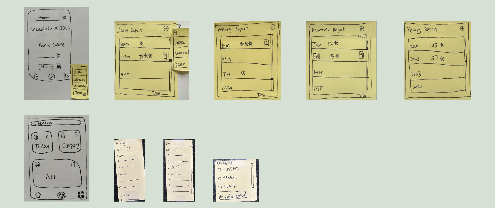
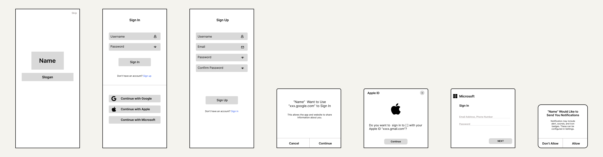
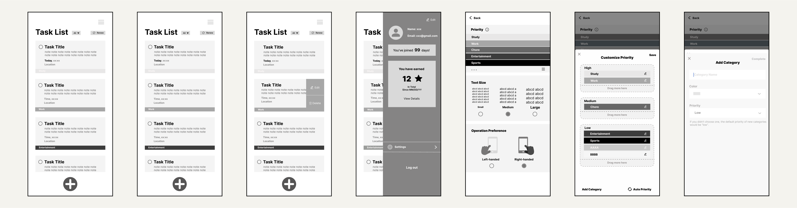
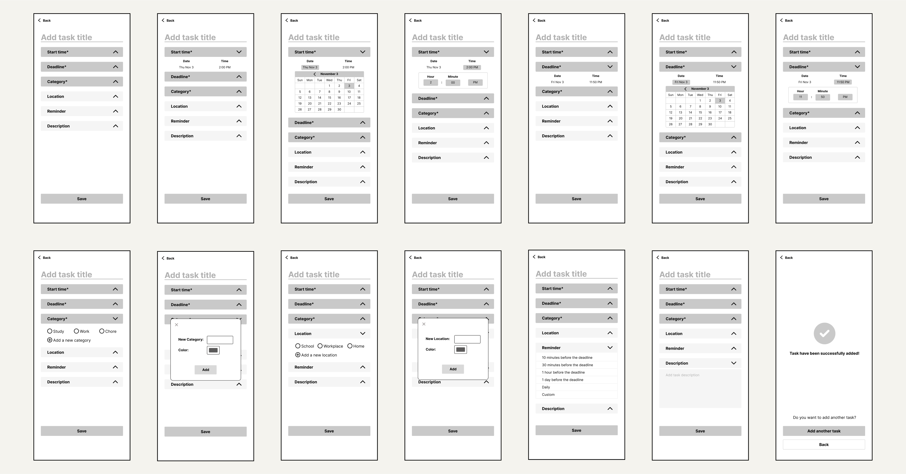
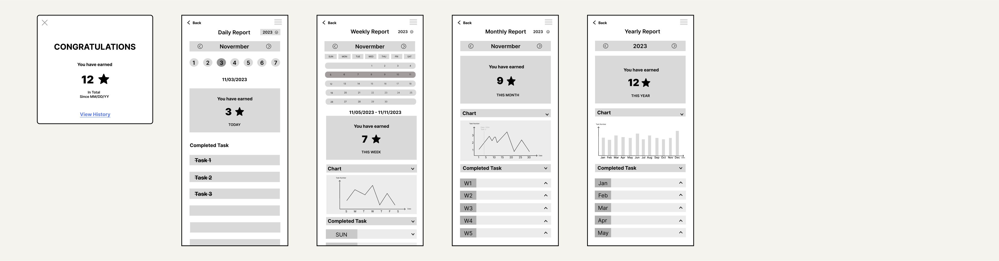

FocusSphere
Project Information
Overview: Our group developed a mobile that helps individuals with attention-deficit/hyperactivity disorder (ADHD) better prioritize and manage their daily tasks. You can view the whole process of how we developed this app here.
Project Type: Group Project in the course of SI 582 - Introduction to Interactive Design
Duration: 9/2023 - 12/2023
Skills: Interactive Design, User Interview, Heuristic Evaluation, User Flow, Paper Prototypes, Wireframing, High-fidelity Prototypes, Figma, Adobe Photoshop, Web Development
Problem Statement
Individuals with ADHD encounter challenges in effectively managing their daily tasks, compounded by difficulties in prioritizing these tasks. Therefore, we aimed to address this issue by developing an effective solution that not only assists these individuals in task management and completion but also helps determine the priorities of their day-to-day tasks.
Research Background
We conducted a literature review to understand the current challenges of ADHD and the existing solutions. We found that individuals with ADHD have trouble with their working memory, which is an ability to retain information for immediate use, and therefore they would have difficulty in accomplishing a lot of daily tasks. They usually suffer from losing things and cannot accomplish daily tasks well in life. It is difficult for them to concentrate on completing tasks and distinguish the priorities of different tasks. So, it is helpful and meaningful to design a product that could encourage them to form a daily habit to check their routine.
Existing Solutions: There are some ways to help individuals with ADHD improve their memory, such as using visual aids and electronic reminders. The advantage of using visual aids is that it helps individuals with ADHD understand, remember, and follow the information they receive. However, individuals with ADHD might find it difficult to find effective visual aids in different situations. Similarly with the use of calendars and reminders. These tools can work as a memory assistant to support them; however, it is easier for them to get distracted when using electronic devices.
User Interview
To further confirm the problem individuals with ADHD were facing, we recruited five interviewees from social media and conducted interviews on them. All of them were Asian adult women. Based on their responses, we found that they all had difficulties in prioritizing their tasks. The followings were some valuable insights:
- Tools' pros & cons and their affordability: As for tech products, participants use different applications and platforms, such as calendar software and task-management software. Participants mentioned that mobile apps were convenient because they could automatically update tasks in other tools when connecting other platforms. Despite these advantages, there are some inherent drawbacks. One participant pointed out, “The act of opening an app is distracting, which can affect my short-term memory.” Another participant echoed a similar sentiment, stating, “I tried to use reminders on my phone before as well but I would even forget to open the reminder.”
- Reminders are particularly beneficial: Some of our respondents mentioned that they forgot what they were going to do before they even opened the software they used to record it. One reason is that individuals with ADHD rely on external prompts rather than having to rely on their own efforts to remember tasks. Meanwhile, it is hard for them to prioritize their tasks, for example thinking that cleaning rooms is as important as studying for exams, so reminders from others are useful for them.
- Our design should not be a burden: Our goal is to help them better complete their daily tasks instead of increasing their burden, it is necessary to make every feature in our design easy to learn how to use. As one participant mentioned, many things that she needed to do would interrupt each other, which would cause a lot of trouble in her life. If she only needed to enter what she thinks she needs to do every day at first, such as ordering takeout, and set it to remind her automatically every day, it would reduce her burden of using the software.
Persona
After we collected data from previous literature and participants, we created two personas based on the analysis of literature review and interview results.
For two personas, we created a scenario for each of them to help us better understand their needs. You can hover over the images to see the details.
Persona 1 - Wenxi Wang
Wenxi Wang, a 28-year-old woman working in tech, struggles with managing daily tasks. She starts her mornings with coffee and drives to work. Recently, she ran out of coffee and forgot her car keys, causing her to be late. Additionally, she missed closing her windows before a rainstorm. Frustrated by these oversights, which were actually listed in her phone's to-do list, Wenxi wishes for a more effective way to track and complete her daily tasks.
Persona 2 - Jingyan Wu
Jingyan Wu, an international student with self-diagnosed ADHD, struggled with managing tasks in her first week in the U.S. She forgot to pick up essential bedding items and faced a dilemma between studying for an exam and cleaning her messy room. After reaching out to friends for advice and receiving late responses, she realized her dependency on others for decision-making and wished for more timely assistance.
User Flow
Paper Prototypes
We found that paper prototypes were a great tool to implement our ideas, because it was less expensive and easy to modify later. Therefore, we created paper prototypes of the main features based on our user flow.
Log In/Sign up Page
Home Page and Profile Page
Add Tasks Page

History Page
Wireframes
Based on what we got from our users, we modified our paper prototypes and then created wirefrmaes. Although they did not have any colors, they were more detailed and specific than paper prototypes.
Log In/Sign Up Page
Home Page and Profile Page
Add Tasks Page
History Page
High-fidelity Prototypes
We modified the wireframes and started creating the high-fidelity prototypes based on all suggestions we got from interviews. There are five main features in our app: Log In/Sign Up Page, Home Page, Profile Page, add Add Tasks Page, and Summary Page. You can view the whole high-fidelity prototype, explaination, and interactions here.
1. Log In/Sign Up Page

2. Home Page

3. Profile Page

4. Add Tasks Page

5. History Page